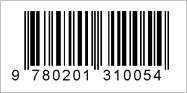

Traditional product barcodes, such as those printed on product packaging, are also known as 1D or one dimensional barcodes. There are several types commonly used, including UPC and EAN. Most look similar to this:

These barcodes contain a unique code which typically identifies a product, like a CD, a book, or packaged food. With my2cents you can search for product related comments to look for other people's opinions, remarks, experiences, recommendations, reviews, and more.
If you scan a product you can also post your own comment.